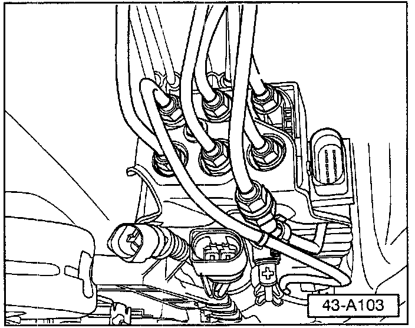
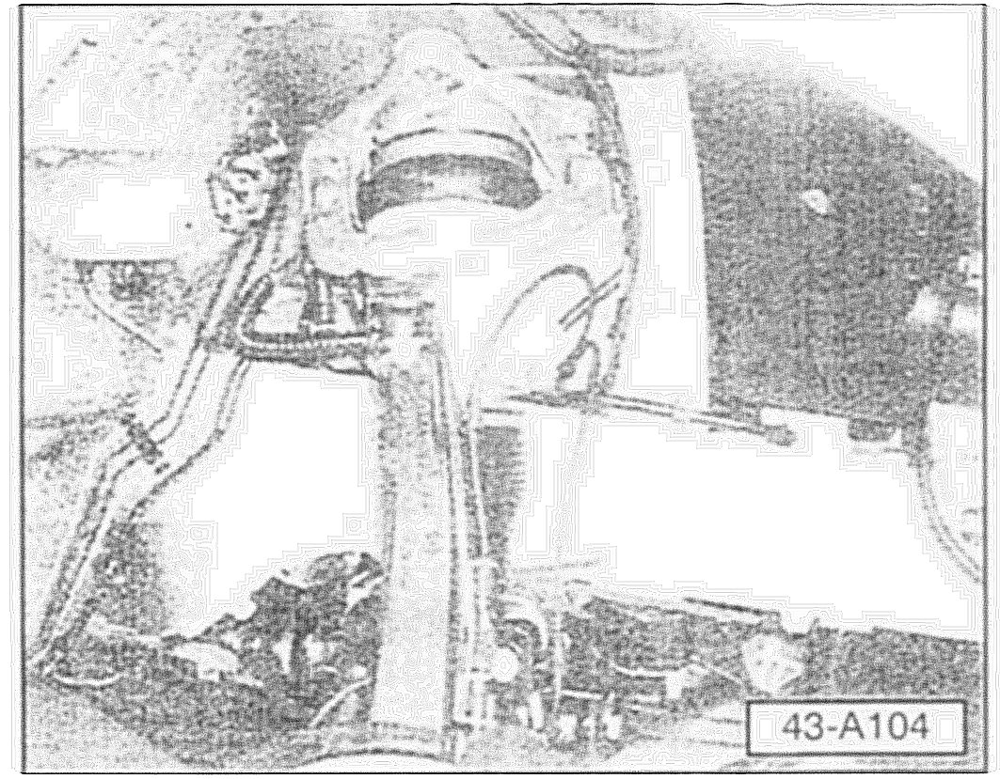
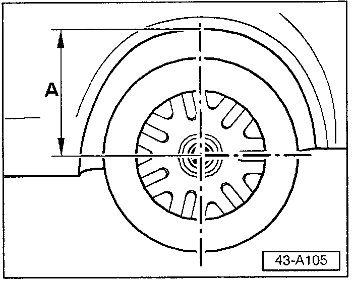
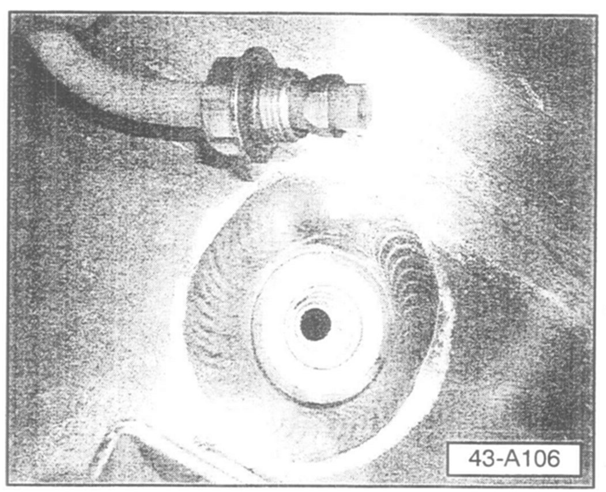
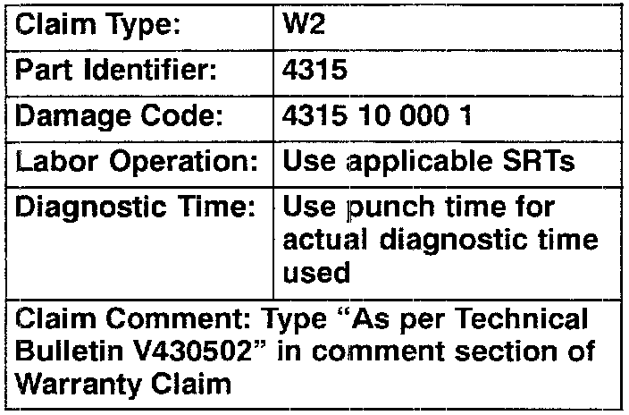

Suspension - DTC 01772 008 Stored in DTC Memory
Group: 43Number: 05-02
Date: December 9, 2005
Subject:
Air Suspension, DTC 01772 008 Stored in DTC Memory
Model(s):
Touareg 2004 --> 2006
Supersedes T.B. Group 43 Number 05-01 dated November 15, 2005 due to Warranty Table Information Change and Inclusion of Repair Kit Part Number.
Condition
Air suspension Diagnostic Trouble Code 01772 008 "implausible signal of pressure sensor" is stored in memory.
In most cases this DTC is related to a leak in the system.
The following outlines proper diagnostic sequence.
Service
Air spring damper supply line, leak test

- Using soapy water (or foaming windshield cleaner), leak test all lines at the compressor and valve block.
Tip:
Compressor must be detached from its body mounts, in order to have access to all lines.
- Wiggle lines during test to simulate a driving situation.
Tip:
Some leaks might only be detectable in this condition.

- Follow lines to individual air spring damper (where accessible without major disassembly), to check for any leaks or kinks in lines.
- Repair any lines kinked or leaking.
Air spring dampers, 12 hour leak down test
- Put car in regular auto driving level.
- Start and idle engine for 10 minutes with doors and liftgate closed.
- Stop engine and switch OFF all electrical consumers.
- Disconnect air suspension control module electrical connector (right rear quarter).

- Record height dimension at every wheel opening.
- Let vehicle sit with doors and liftgate closed for the next 12 hours.
- Measure wheel openings again to see if suspension has lowered.
Tip:
This measurement must be taken at similar a temperature (+/- 5 °F).
^ A 2-3 mm drop in suspension height overnight is normal.
^ A 5 mm or greater drop in suspension height indicates a leak at that particular corner of vehicle.
- Check lines from the air spring damper to the valve block for leaks.
- Wiggle lines, as they often need a dynamic situation to show problems.
Tip:
There are no check valves in each individual air spring damper and the line is pressurized from valve block to each air spring damper.
^ If more than one corner of vehicle drops in excess of 5 mm, leak is most likely in the valve block.
- Replace valve block.
- Repair any lines kinked or leaking.
Accumulator and line, leak test
^ Lines to air spring dampers were previously verified.
- Follow blue lines from compressor to accumulators to check for leaks.
These lines are not easy to access:
- Rear seat and carpet have to be removed or peeled back to get to blue lines in some places.
Tip:

- One difficult leak to find is a poor line seating condition at rear accumulator
- Wiggle lines to determine if it leaks only in a dynamic situation.
- Repair any lines kinked or leaking.
Compressor insufficiency
If above DTC returns after actions above have been completed:
- DO NOT REPLACE Compressor.
- Compressor should be repaired with repair kit Part No: 7L0 698 030, see repair manual, Group 43 - Self leveling suspension, Air Supply Unit, servicing.
Tip:
Part numbers listed in this T.B. are for reference only Always check with your Parts Dept. for the latest parts information.

When procedure applies to vehicles within the New Vehicle Limited Warranty, use the table.